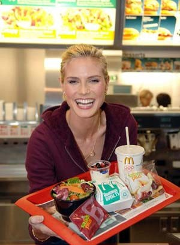
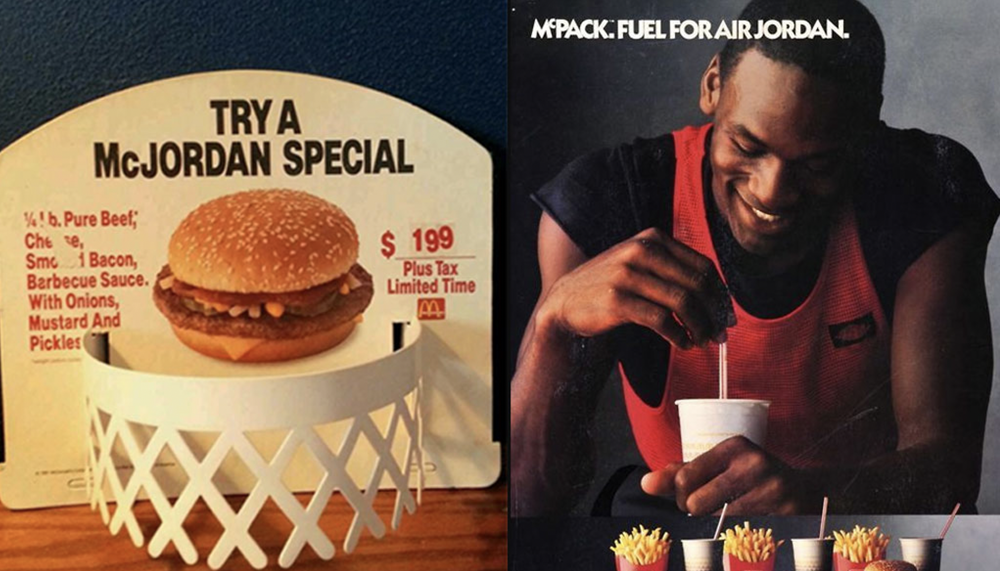

Code
co <- c("check")Initially created to treat patients with Type 2 Diabetes, the drug ‘semaglutide’ gained approval from the FDA to treat obesity and has since gotten a lot of attention. Elon Musk attributed his weight loss to the new drug called ‘Wegovy’ and Kim Kadashian is believed to have used the drug to lose 16lb in three weeks to fit into a dress that belonged to Marilyn Monroe. Today, the producing company Novo Nordisk is unable to meet the demand even though the drug is only available in the US.
On the one hand, it is a promising treatment option for obese patients, however, the great enthusiasm outside the patient population raises broader questions about weight, health, obesity, and society.
Every day, we are targeted by advertisements that depict famous athletes or models eating high fat, high sugar, and high processed food.  
These people are symbols of beauty, fitness, success, and discipline and their association with these products is supposed to convey these attributes to the respective products. They might further work in countering negative perceptions of these products as being unhealthy. Because one thing is for certain - we do not want to be seen as obese, or even slightly overweighed. In public media, shows like ‘The Biggest Loser’ depict obese people as lacking self-regulatory capacities and follow the folk rationale that obese people lack willpower and discipline, are unhygienic, and lazy. A phenomenon oftentimes describes as fatphobia the ‘the implicit and explicit bias of overweight individuals that is rooted in a sense of blame and presumed moral failing.’ In parallel, social media (Instagram, TicToc, Snapchat) bombard us with an ideal of beauty that emphasizes athleticism, slimness and skin free of impurities, which creates a false perception of the norm and is reflected not least in the available filters on these platforms. Unsurprisingly, the paradoxical situation of living in a culture where high caloric fast-foods are cheap, readily available, and highly advertised that simultaneously pursues an unforgiving ideal of beauty and health, creates increased feelings of guilt and (bodily) dissatisfaction.
It should not come as a surprise that the drug is enthusiastically embraced by an overweight population that chases an unrealistic ideal and embraces individualized self-improvement doctrines.
The first article will touch upon the following themes:
How high fat, high processed food is advertised most, actors being famous sports dudes or models. at the same time, fatphobia is increasingly recognized as a common ground for discrimination and ostracism. TV shows like “The Biggest Loser” depict obese people as lacking self-regulatory capacities and follow the folk rationale that obese people lack willpower and discipline, unhygienic/unclean. stigmatization.
The common beauty ideal is slim, sporty (picture how it changed over the decades?)
This can lead to feelings of shame and inadequacy among those who do not fit this ideal, and can also contribute to the increased prescription of weight loss drugs.
end with the big bang of a society where study drugs / cognitive enhancement if celebrated alongsided weightloss drugs. cosmetic surgeries, hair transplants, etc.
touch upon adderall and SSRIs - the threshold is ever decreasing - medicalization of society?
The TV show “The Biggest Loser” depicts obese people as needing to lose weight in order to be successful and happy. The show often emphasizes the physical transformation of the contestants as the primary measure of success and often uses before and after shots, weigh-ins, and other visual cues to highlight their weight loss.
However, this representation of obesity and weight loss can be stigmatizing in several ways: (ytvideo)[https://www.youtube.com/watch?v=eD0IrZvKVQk] (ytvideo)[https://www.youtube.com/watch?v=HmtbL4j9_hw]
It reinforces the idea that obesity is a personal failure and that people who are obese are lazy and lack discipline.
It implies that weight loss is the only solution to obesity and that being thin is the only way to be happy and successful.
It can also be argued that the show's emphasis on rapid weight loss through extreme dieting and exercise can be dangerous and unsustainable, and can set unrealistic expectations for viewers.
Additionally, the show has been criticized for not addressing the underlying psychological and emotional factors that contribute to weight gain, and not providing a holistic approach to weight loss and health.individual problem - individual solution